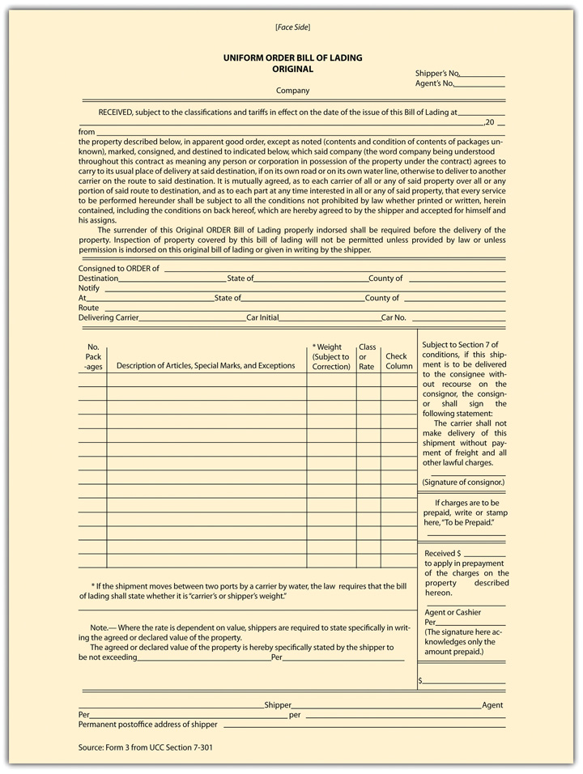

Warehousing has been called the “second oldest profession,” stemming from the biblical story of Joseph, who stored grain during the seven good years against the famine of the seven bad years. Whatever its origins, warehousing is today a big business, taking in billions of dollars to stockpile foods and other goods. As noted previously, the source of law governing warehousing is Article 7 of the UCC, but noncode law also can apply. Section 7-103 of the Uniform Commercial Code (UCC) specifically provides that any federal statute or treaty and any state regulation or tariff supersedes the provisions of Article 7. A federal example is the United States Warehouse Act, which governs receipts for stored agricultural products. Here we take up, after some definitions, the warehouser’s liabilities and rights. A warehouser is a special type of bailee.
A warehouserOne whose business it is to store goods. is defined in UCC, Section 7-102(h), as “a person engaged in the business of storing goods for hire,” and under Section 1-201(45) a warehouse receiptA written document for items warehoused, serving as evidence of title to the stored goods. is any receipt issued by a warehouser. The warehouse receipt is an important document because it can be used to transfer title to the goods, even while they remain in storage: it is worth money. No form is prescribed for the warehouse receipt, but unless it lists in its terms the following nine items, the warehouser is liable to anyone who is injured by the omission of any of them:
The warehouser’s general duty of care is embodied in the tort standard for measuring negligence: he is liable for any losses or injury to the goods caused by his failure to exercise “such care in regard to them as a reasonably careful man would exercise under like circumstances.”Uniform Commercial Code, Section 7-204(1). However, subsection 4 declares that this section does not repeal or dilute any other state statute that imposes a higher responsibility on a warehouser. Nor does the section invalidate contractual limitations otherwise permissible under Article 7. The warehouser’s duty of care under this section is considerably weaker than the carrier’s duty. Determining when a warehouser becomes a carrier, if the warehouser is to act as shipper, can become an important issue.
The warehouser may limit the amount of damages she will pay by so stating in the warehouse receipt, but she must strictly observe that section’s requirements, under which the limitation must be stated “per article or item, or value per unit of weight.”Uniform Commercial Code, Section 7-204(2). Moreover, the warehouser cannot force the bailor to accept this limitation: the bailor may demand in writing increased liability, in which event the warehouser may charge more for the storage. If the warehouser converts the goods to her own UCC, the limitation of liability does not apply.
Several problems recur in warehousing, and the law addresses them.
Under UCC Section 7-203, a warehouser is responsible for goods listed in a warehouse receipt that were not in fact delivered to the warehouse (or were misdescribed) and must pay damages to a good-faith purchaser of or party to a document of title. To avoid this liability, the issuer must conspicuously note on the document that he does not know whether the goods were delivered or are correctly described. One simple way is to mark on the receipt that “contents, condition, and quality are unknown.”
The bailee is obligated to deliver the goods to any person with documents that entitle him to possession, as long as the claimant pays any outstanding liens and surrenders the document so that it can be marked “cancelled” (or can be partially cancelled in the case of partial delivery). The bailee can avoid liability for no delivery by showing that he delivered the goods to someone with a claim to possession superior to that of the claimant, that the goods were lost or destroyed through no fault of the bailee, or that certain other lawful excuses apply.Uniform Commercial Code, Section 7-403(1). Suppose a thief deposits goods he has stolen with a warehouse. Discovering the theft, the warehouser turns the goods over to the rightful owner. A day later the thief arrives with a receipt and demands delivery. Because the rightful owner had the superior claim, the warehouser is not liable in damages to the thief.
Now suppose you are moving and have placed your goods with a local storage company. A few weeks later, you accidentally drop your wallet, which contains the receipt for the goods and all your identification. A thief picks up the wallet and immediately heads for the warehouse, pretending to be you. Having no suspicion that anything is amiss—it’s a large place and no one can be expected to remember what you look like—the warehouse releases the goods to the thief. This time you are probably out of luck. Section 7-404 says that “a bailee who in good faith including observance of reasonable commercial standards has received goods and delivered…them according to the terms of the document of title…is not liable.” This rule is true even though the person to whom he made delivery had no authority to receive them, as in the case of the thief. However, if the warehouser had a suspicion and failed to take precautions, then he might be liable to the true owner.
Except for fungible goods, like grain, the warehouse must keep separate goods covered by each warehouse receipt. The purpose of this rule, which may be negated by explicit language in the receipt, is to permit the bailor to identify and take delivery of his goods at any time.
The warehouser has certain rights concerning the bailed goods.
A warehouser is not obligated to store goods indefinitely. Many warehouse receipts will specify the period of storage. At the termination of the period, the warehouser may notify the bailor to pay and to recover her goods. If no period is fixed in the receipt or other document of title, the warehouser may give notice to pay and remove within no less than thirty days. The bailor’s failure to pay and remove permits the warehouser to sell the goods for her fee. Suppose the goods begin to deteriorate. Sections 7-207(2) and 7-207(3) of the UCC permit the warehouser to sell the goods early if necessary to recover the full amount of her lien or if the goods present a hazard. But if the rightful owner demands delivery before such a sale, the warehouser is obligated to do so.
Section 7-209(1) of the UCC provides that a warehouser has a lien on goods covered by a warehouse receipt to recover the following charges and expenses: charges for storage or transportation, insurance, labor, and expenses necessary to preserve the goods. The lien is not discharged if the bailor transfers his property interest in the goods by negotiating a warehouse receipt to a purchaser in good faith, although the warehouser is limited then to an amount or a rate fixed in the receipt or to a reasonable amount or rate if none was stated. The lien attaches automatically and need not be spelled out in the warehouse receipt.
The warehouser may enforce the lien by selling the goods at a public or private sale, as long as she does so in a commercially reasonable manner, as defined in Section 7-210. All parties known to be claiming an interest in the goods must be notified of the sale and told the amount due, the nature of the sale, and its time and place. Any person who in good faith purchases the goods takes them free of any claim by the bailor, even if the warehouser failed to comply with the requirements of Section 7-210. However, her failure to comply subjects her to damages, and if she has willfully violated the provisions of this section she is liable to the bailor for conversion.
The shipment of goods throughout the United States and abroad is a very big business, and many specialized companies have been established to undertake it, including railways, air cargo operations, trucking companies, and ocean carriers. Article 7 of the UCC applies to carriage of goods as it does to warehousing, but federal law is more important. The Federal Bill of Lading Act (FBLA) covers bills of lading issued by common carriers for transportation of goods in interstate or foreign commerce (i.e., from one state to another; in federal territory; or to foreign countries). The Carmack Amendment was enacted in 1906 as an amendment to the Interstate Commerce Act of 1887, and it is now part of the Interstate Commerce Commission Termination Act of 1995; it covers liability of interstate carriers for loss, destruction, and damage to goods. The shipperOne who engages the services of a carrier. is the entity hiring the one who transports the goods: if you send your sister crystal goblets for her birthday, you are the shipper.
Two terms are particularly important in discussing shipment of goods. One is common carrier; the common carrierA carrier that holds itself open to any member of the public for a fee. is “one who undertakes for hire or reward to transport the goods of such as chooses to employ him, from place to place.”Ace High Dresses v. J. C. Trucking Co., 191 A. 536 (Conn. 1937). This definition contains three elements: (1) the carrier must hold itself out for all in common for hire—the business is not restricted to particular customers but is open to all who apply for its services; (2) it must charge for his services—it is for hire; (3) the service in question must be carriage. Included within this tripartite definition are numerous types of carriers: household moving companies, taxicabs, towing companies, and even oil and gas pipelines. Note that to be a common carrier it is not necessary to be in the business of carrying every type of good to every possible point; common carriers may limit the types of goods or the places to which they will transport them.
A bill of ladingA document of title acknowledging receipt of goods by a carrier. is any document that evidences “the receipt of goods for shipment issued by a person engaged in the business of transporting or forwarding goods.”Uniform Commercial Code, Section 1-206(6). This is a comprehensive definition and includes documents used by contract carriers—that is, carriers who are not common carriers. An example of a bill of lading is depicted in Figure 21.2 "A Bill of Lading Form".
Figure 21.2 A Bill of Lading Form
The transportation of goods has been an important part of all evolved economic systems for a long time, and certainly it is critical to the development and operation of any capitalistic system. The law regarding it is well developed.
Damage, destruction, and loss are major hazards of transportation for which the carrier will be liable. Who will assert the claim against the carrier depends on who bears the risk of loss. The rules governing risk of loss (examined in Chapter 18 "Title and Risk of Loss") determine whether the buyer or seller will be the plaintiff. But whoever is the plaintiff, the common carrier defendant faces absolute liability. With five exceptions explored two paragraphs on, the common carrier is an insurer of goods, and regardless of the cause of damage or loss—that is, whether or not the carrier was negligent—it must make the owner whole. This ancient common-law rule is codified in state law, in the federal Carmack Amendment, and in the UCC, Section 7-309(1), all of which hold the common carrier to absolute liability to the extent that the common law of the state had previously done so.
Absolute liability was imposed in the early cases because the judges believed such a rule was necessary to prevent carriers from conspiring with thieves. Since it is difficult for the owner, who was not on the scene, to prove exactly what happened, the judges reasoned that putting the burden of loss on the carrier would prompt him to take extraordinary precautions against loss (and would certainly preclude him from colluding with thieves). Note that the rules in this section govern only common carriers; contract carriers that do not hold themselves out for transport for hire are liable as ordinary bailees.
In general, the burden or proof rests on the carrier in favor of the shipper. The shipper (or consignee of the shipper) can make out a prima facie case by showing that it delivered the goods to the carrier in good condition and that the goods either did not arrive or arrived damaged in a specified amount. Thereafter the carrier has the burden of proving that it was not negligent and that the loss or damage was caused by one of the five following recognized exceptions to the rule of absolute liability.
No one has ever succeeded in defining precisely what constitutes an act of God, but the courts seem generally agreed that it encompasses acts that are of sudden and extraordinary natural, as opposed to human, origin. Examples of acts of God are earthquakes, hurricanes, and fires caused by lightning against which the carrier could not have protected itself. Rapid River Carriers contracts to transport a refrigerated cargo of beef down the Mississippi River on the SS Rapid. When the ship is en route, it is hit by a tornado and sinks. This is an act of God. But a contributing act of negligence by a carrier overcomes the act of God exception. If it could be shown that the captain was negligent to set sail when the weather warned of imminent tornados, the carrier might be liable.
This is a narrow exception that applies only to acts committed by pirates at high sea or by the armed forces of enemies of the state to which the carrier owes allegiance. American ships at sea that are sunk during wartime by enemy torpedoes would not be liable for losses to the owners of cargo. Moreover, public enemies do not include lawless mobs or criminals listed on the FBI’s Ten Most Wanted list, even if federal troops are required, as in the Pullman Strike of 1894, to put down the violence. After the Pullman Strike, carriers were held liable for property destroyed by violent strikers.
When a public authority—a sheriff or federal marshal, for example—through lawful process seizes goods in the carrier’s possession, the carrier is excused from liability. Imagine that federal agents board the SS Rapid in New Orleans and, as she is about to sail, show the captain a search warrant and seize several boxes of cargo marked “beef” that turn out to hold cocaine. The owner or consignee of this illegal cargo will not prevail in a suit against the carrier to recover damages. Likewise, if the rightful owner of the goods obtains a lawful court order permitting him to attach them, the carrier is obligated to permit the goods to be taken. It is not the carrier’s responsibility to contest a judicial writ or to face the consequences of resisting a court order. The courts generally agree that the carrier must notify the owner whenever goods are seized.
When goods are lost or damaged because of the shipper’s negligence, the shipper is liable, not the carrier. The usual situation under this exception arises from defective packing. The shipper who packs the goods defectively is responsible for breakage unless the defect is apparent and the carrier accepts the goods anyway. For example, if you ship your sister crystal goblets packed loosely in the box, they will inevitably be broken when driven in trucks along the highways. The trucker who knowingly accepts boxes in this condition is liable for the damage. Likewise, the carrier’s negligence will overcome the exception and make him absolutely liable. A paper supplier ships several bales of fine stationery in thin cardboard boxes susceptible to moisture. Knowing their content, SS Rapid accepts the bales and exposes them to the elements on the upper deck. A rainstorm curdles the stationery. The carrier is liable.
The fifth exception to the rule of absolute liability is rooted in the nature of the goods themselves. If they are inherently subject to deterioration or their inherent characteristics are such that they might be destroyed, then the loss must lie on the owner. Common examples are chemicals that can explode spontaneously and perishable fruits and vegetables. Of course, the carrier is responsible for seeing that foodstuffs are properly stored and cared for, but if they deteriorate naturally and not through the carrier’s negligence, he is not liable.
The transportation system is complex, and few goods travel from portal to portal under the care of one carrier only. In the nineteenth century, the shipper whose goods were lost had a difficult time recovering their value. Initial carriers blamed the loss on subsequent carriers, and even if the shipper could determine which carrier actually had possession of the goods when the damage or loss occurred, diverse state laws made proof burdensome. The Carmack Amendment ended the considerable confusion by placing the burden on the initial carrier; connecting carriers are deemed agents of the initial carrier. So the plaintiff, whether seller or buyer, need sue only the initial carrier, no matter where the loss occurred. Likewise, Section 7-302 of the UCC fastens liability on an initial carrier for damages or loss caused by connecting carriers.
When a carrier’s liability begins and ends is an important issue because the same company can act both to store the goods and to carry them. The carrier’s liability is more stringent than the warehouser’s. So the question is, when does a warehouser become a carrier and vice versa?
The basic test for the beginning of carrier liability is whether the shipper must take further action or give further instructions to the carrier before its duty to transport arises. Suppose that Cotton Picking Associates delivers fifty bales of cotton to Rapid River Carriers for transport on the SS Rapid. The SS Rapid is not due back to port for two more days, so Rapid River Carrier stores the cotton in its warehouse, and on the following day the warehouse is struck by lightning and burns to the ground. Is Rapid River Carriers liable in its capacity as a carrier or warehouse? Since nothing was left for the owner to do, and Rapid River was storing the cotton for its own convenience awaiting the ship’s arrival, it was acting as a carrier and is liable for the loss. Now suppose that when Cotton Picking Associates delivered the fifty bales it said that another fifty bales would be coming in a week and the entire lot was to be shipped together. Rapid River stores the first fifty bales and lightning strikes. Since more remained for Cotton Picking to do before Rapid River was obligated to ship, the carrier was acting in its warehousing capacity and is not liable.
The carrier’s absolute liability ends when it has delivered the goods to the consignee’s residence or place of business, unless the agreement states otherwise (as it often does). By custom, certain carriers—notably rail carriers and carriers by water—are not required to deliver the goods to the consignee (since rail lines and oceans do not take the carrier to the consignee’s door). Instead, consignees must take delivery at the dock or some other place mutually agreed on or established by custom.
When the carrier must make personal delivery to the consignee, carrier liability continues until the carrier has made reasonable efforts to deliver. An express trucking company cannot call on a corporate customer on Sunday or late at night, for instance. If reasonable efforts to deliver fail, it may store the goods in its own warehouse, in which case its liability reverts to that of a warehouser.
If personal delivery is not required (e.g., as in shipment by rail), the states use different approaches for determining when the carrier’s liability terminates. The most popular intrastate approach provides that the carrier continues to be absolutely responsible for the goods until the consignee has been notified of their arrival and has had a reasonable opportunity to take possession of them.
Interstate shipments are governed by the Carmack Amendment, which generally provides that liability will be determined by language in the bill of lading. The typical bill of lading (or “BOL” and “B/L”) provides that if the consignee does not take the goods within a stated period of time after receiving notice of their arrival, the carrier will be liable as warehouser only.
The apparently draconian liability of the carrier—as an insurer of the goods—is in practice easily minimized. Under neither federal nor state law may the carrier disclaim its absolute liability, but at least as to commercial transactions it may limit the damages payable under certain circumstances. Both the Carmack Amendment and Section 7-309 of the UCC permit the carrier to set alternate tariffs, one costing the shipper more and paying full value, the other costing less and limited to a dollar per pound or some other rate less than full value. The shipper must have a choice; the carrier may not impose a lesser tariff unilaterally on the shipper, and the loss must not be occasioned by the carrier’s own negligence.
The rules just discussed relate to the general liability of the carrier for damages to the goods. There are two specific types of liability worth noting.
Under the UCC, Section 7-301(1), the owner of the goods (e.g., a consignee) described in a bill of lading may recover damages from the issuer of the bill (the carrier) if the issuer did not actually receive the goods from the shipper, if the goods were misdescribed, or if the bill was misdated. The issuer may avoid liability by reciting in the bill of lading that she does not know whether the goods were received or if they conform to the description; the issuer may avoid liability also by marking the goods with such words as “contents or condition of contents unknown.” Even this qualifying language may be ineffective. For instance, a common carrier may not hide behind language indicating that the description was given by the shipper; the carrier must actually count the packages of goods or ascertain the kind and quantity of bulk freight. Just because the carrier is liable to the consignee for errors in description does not mean that the shipper is free from blame. Section 7-301(5) requires the shipper to indemnify the carrier if the shipper has inaccurately described the goods in any way (including marks, labels, number, kind, quantity, condition, and weight).
The rule just discussed for warehouser applies to carriers under both state and federal law: carriers are absolutely liable for delivering the goods to the wrong party. In the classic case of Southern Express Co. v. C. L. Ruth & Son, a clever imposter posed as the representative of a reputable firm and tricked the carrier into delivering a diamond ring.Southern Express Co. v. C. L. Ruth & Son, 59 So. 538 (Ala. Ct. App. 1912). The court held the carrier liable, even though the carrier was not negligent and there was no collusion. The UCC contains certain exceptions; under Section 7-303(1), the carrier is immune from liability if the holder, the consignor, or (under certain circumstances) the consignee gives instructions to deliver the goods to someone other than a person named in the bill of lading.
Just as the warehouser can have a lien, so too can the carrier. The lien can cover charges for storage, transportation, and preservation of goods. When someone has purchased a negotiable bill of lading, the lien is limited to charges stated in the bill, allowed under applicable tariffs, or, if none are stated, to a reasonable charge. A carrier who voluntarily delivers or unjustifiably refuses to deliver the goods loses its lien. The carrier has rights paralleling those of the warehouser to enforce the lien.
In addition to shipping goods, common carriers also transport passengers and their baggage. The carrier owes passengers a high degree of care; in 1880 the Supreme Court described the standard as “the utmost caution characteristic of very careful prudent men.”Pennsylvania Co. v. Roy, 102 US 451 (1880). This duty implies liability for a host of injuries, including mental distress occasioned by insults (“lunatic,” “whore,” “cheap, common scalawag”) and by profane or indecent language. In Werndli v. Greyhound,Werndli v. Greyhound Corp., 365 So.2d 177 (Fla. Ct. App., 1978) Mrs. Werndli deboarded the bus at her destination at 2:30 a.m.; finding the bus station closed, she walked some distance to find a bathroom. While doing so, she became the victim of an assault. The court held Greyhound liable: it should have known the station was closed at 2:30 a.m. and that it was located in a area that became dangerous after hours. The case illustrates the degree to which a carrier is responsible for its passengers’ safety and comfort.
The baggage carrier is liable as an insurer unless the baggage is not in fact delivered to the carrier. A passenger who retains control over his hand luggage by taking it with him to his seat has not delivered the baggage to the carrier, and hence the carrier has no absolute liability for its loss or destruction. The carrier remains liable for negligence, however. When the passenger does deliver his luggage to the carrier, the question often arises whether the property so delivered is “baggage.” If it is not, the carrier does not have an insurer’s liability toward it. Thus a person who transports household goods in a suitcase would not have given the carrier “baggage,” as that term is usually defined (i.e., something transported for the passenger’s personal use or convenience). At most, the carrier would be responsible for the goods as a gratuitous bailee.
The storage of goods is a special type of bailment. People who store goods can retrieve them or transfer ownership of them by transferring possession of the warehouse receipt: whoever has rightful possession of the receipt can take the goods, and the warehouser is liable for misdelivery or for mixing up goods. The warehouser has a right to a lien to secure his fee, enforceable by selling the goods in a commercially reasonable way. The shipping of goods is of course an important business. Common carriers (those firms that hire out their trucks, airplanes, ships, or trains to carry cargo) are strictly liable to ensure the proper arrival of the goods to their destination, with five exceptions (act of God, public enemy, public authority, shipper; inherent nature of the goods); the first carrier to receive them is liable—others who subsequently carry are that carrier’s agents. The carrier may also store goods: if it does so for its own convenience it is liable as a carrier; if it does so for the shipper’s convenience, it is liable as a warehouser. As with warehousers, the carrier is liable for misdelivery and is entitled to a lien to enforce payment. Carriers also carry people, and the standard of care they owe to passengers is very high. Carrying passengers’ baggage, the carrier is liable as an insurer—it is strictly liable.